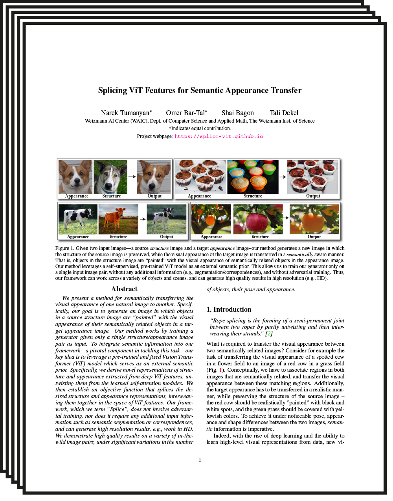

Text2LIVE: Text-Driven Layered Image and Video Editing
| ArXiv. 2022 |
| Weizmann Institute of Science |
| | Paper | Supplementary Material | Code | |
Abstract
We present a method for zero-shot, text-driven appearance manipulation in natural images and videos. Specifically, given an input image or video and a target text prompt, our goal is to edit the appearance of existing objects (e.g., object's texture) or augment the scene with new visual effects (e.g., smoke, fire) in a semantically meaningful manner. Our framework trains a generator using an internal dataset of training examples, extracted from a single input (image or video and target text prompt), while leveraging an external pre-trained CLIP model to establish our losses. Rather than directly generating the edited output, our key idea is to generate an edit layer (color+opacity) that is composited over the original input. This allows us to constrain the generation process and maintain high fidelity to the original input via novel text-driven losses that are applied directly to the edit layer. Our method neither relies on a pre-trained generator nor requires user-provided edit masks. Thus, it can perform localized, semantic edits on high-resolution natural images and videos across a variety of objects and scenes.
Semi-Transparent Effects
Text2LIVE successfully augments the input scene with complex semi-transparent effects without changing irrelevant content in the image.
Paper
|  |
Text2LIVE: Text-Driven Layered Image and Video Editing |
Supplementary Material
 |
Bibtex
Acknowledgments
We would like to thank Meirav Galun and Shir Amir for their insightful comments and discussion. We thank Oliver Wang and Taesung Park for their help with the comparison to Swapping Autoencoders.